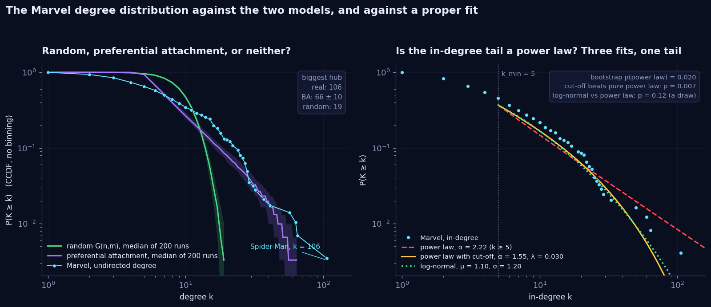
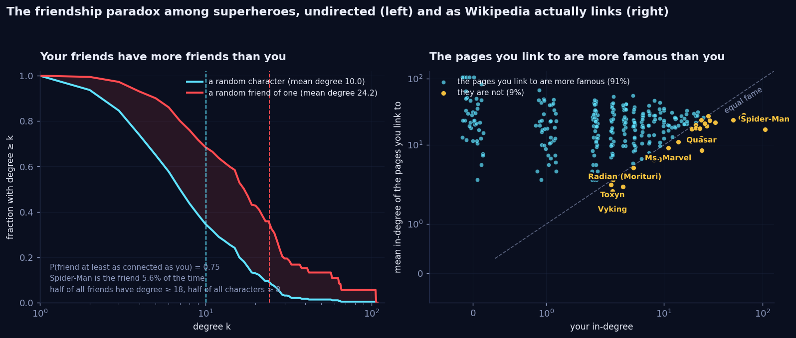
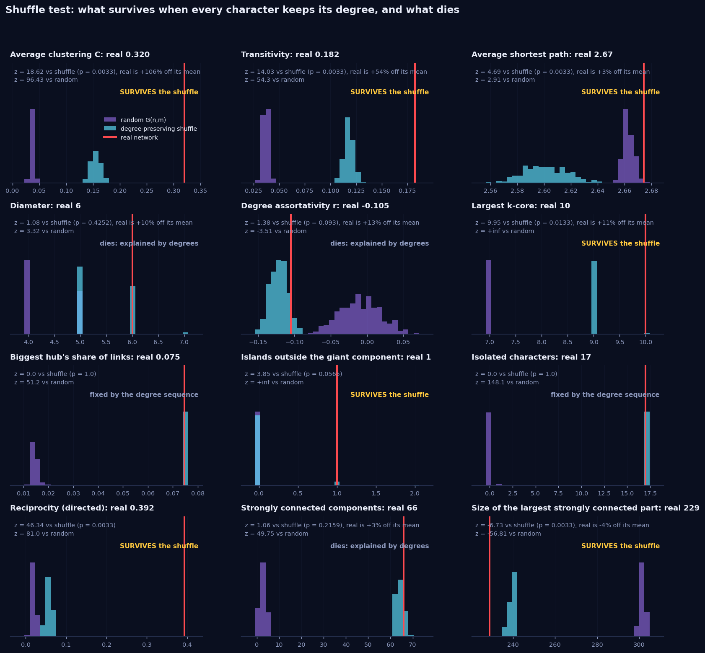
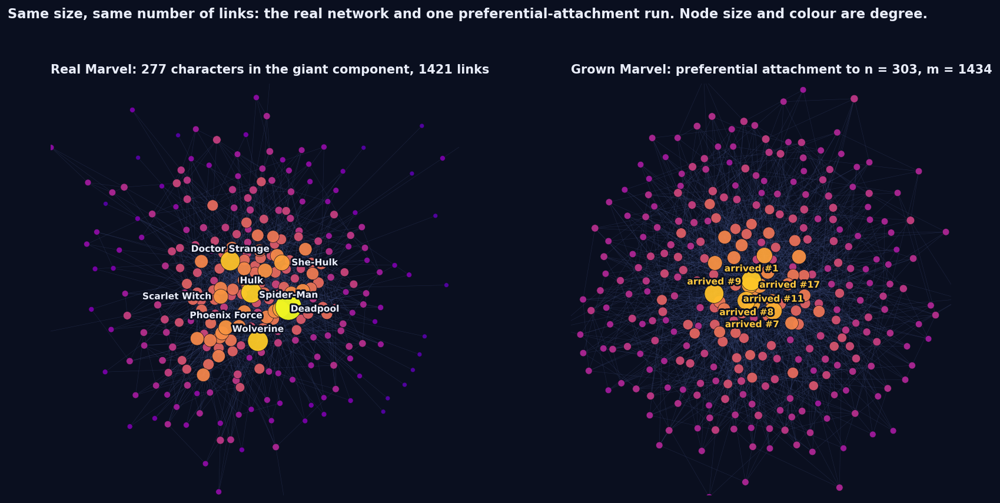
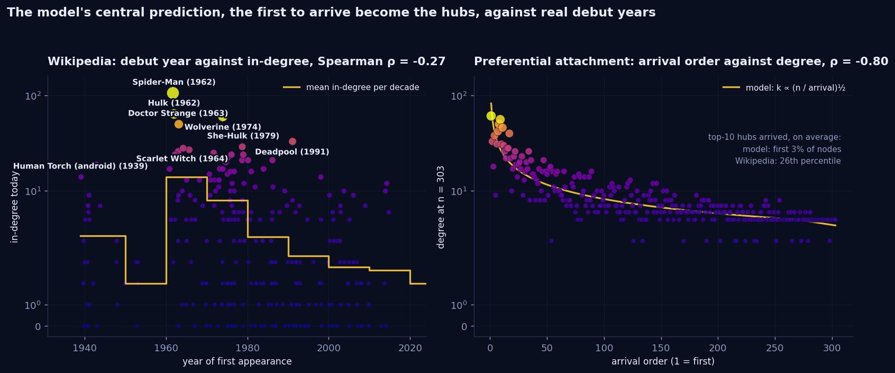
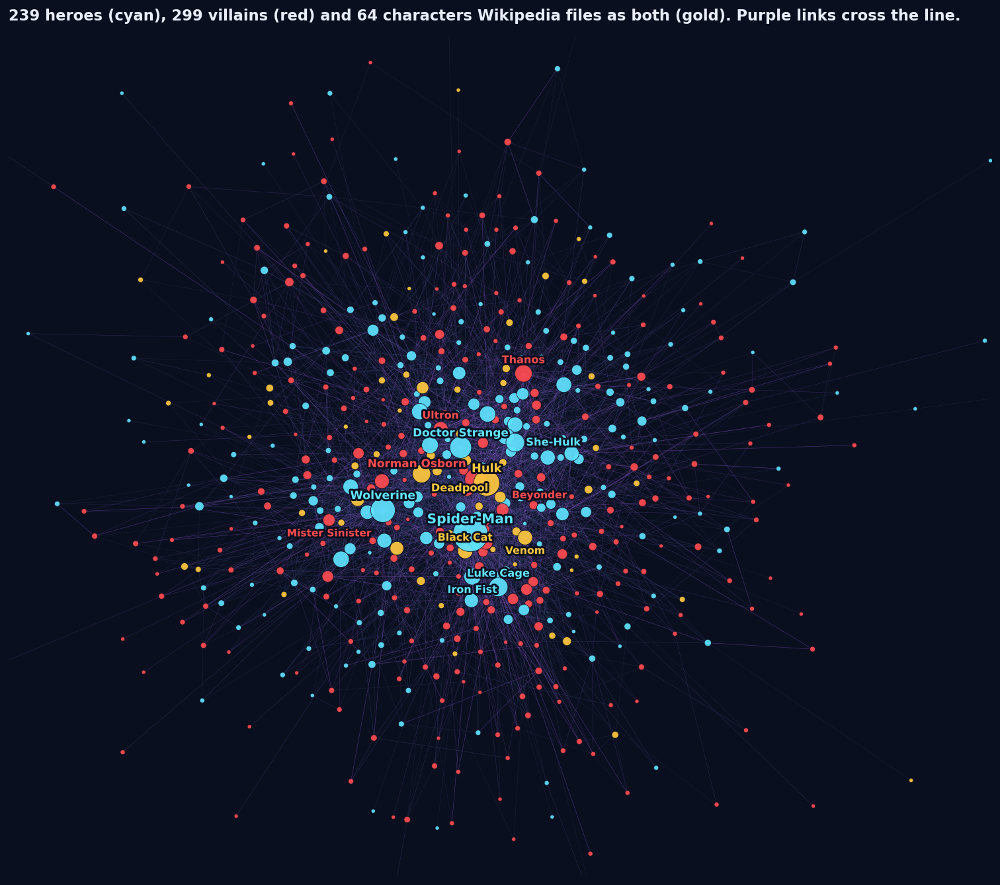
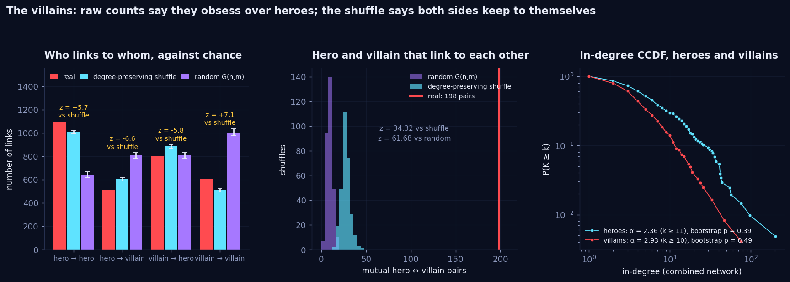

Shuffle the universe.
See what survives.
Last week we described the Marvel network. This week we tested it. We grew a fake Marvel with preferential attachment, shuffled the real one hundreds of times, crawled the supervillains to give the heroes something to fight, and asked the same question of every number: would chance have handed us this anyway? Some answers survived. Some famous-sounding ones did not. Villains do not obsess over heroes, hubs do not avoid each other, and arriving first is worth almost nothing.
What we asked
- Random, preferential attachment, or neither? Not by eyeballing a log-log plot. With a CCDF, a maximum-likelihood fit, a bootstrap and two alternatives, and an honest list of what 303 nodes cannot tell you.
- Does the friendship paradox hold among superheroes? Who are the popular friends that drive it, and is there anybody nobody is out-popularitied by?
- Which numbers survive a shuffle? We took twelve properties of the network and tested each against two null models: a degree-preserving shuffle and a plain random network. Survivors mean something. Casualties were degree all along.
- Can preferential attachment grow a Marvel? Same n, same m, and then the model's central prediction, that whoever arrives first becomes a hub, checked against 291 real debut years.
- What happens when you add the villains? The standing option this week is a second Wikipedia category. Heroes need villains, so we crawled Category:Marvel Comics supervillains and ran everything again on the combined network. That is where the biggest surprise was hiding.
1. Random, preferential attachment, or neither?
The undirected Marvel network has 303 characters and 1434 links, an average degree of 9.5, and a biggest hub of 106. A random network with those numbers has a Poisson degree distribution whose biggest hub is around 19. A preferential-attachment network with those numbers has a heavy tail and a biggest hub around 66. So the shape question has a cheap first answer, and the CCDF gives it without any binning at all: every point is a character.

Two things the left panel shows that a binned plot hides. The real network has far more weakly connected characters than the model: a third of all characters have degree three or less, and preferential attachment cannot make any of them, because every newcomer arrives with four or five links and never loses one. And at the other end the model never made a Spider-Man: the biggest hub in 200 runs was 95, and Spider-Man sits at 106.
The fit, done the way the field learned to do it
We wrote the Clauset, Shalizi and Newman recipe ourselves rather than eyeballing a slope: estimate the exponent by maximum likelihood, pick kmin by the Kolmogorov-Smirnov distance, test the fit with 500 bootstrap datasets, and compare against a log-normal, an exponential and a power law with an exponential cut-off on the same tail. First we checked that it recovers a known exponent from synthetic data. Then we ran it on Marvel.
| Degree | kmin | Nodes in tail | α | Bootstrap p | Verdict |
|---|---|---|---|---|---|
| In-degree | 5 | 112 | 2.22 ± 0.12 | 0.02 | Pure power law rejected. A power law with cut-off fits significantly better (p = 0.007). Log-normal: a draw. |
| Undirected degree | 15 | 69 | 3.39 ± 0.29 | 0.16 | Power law not rejected. Neither is the log-normal (p = 0.73), nor even the exponential (p = 0.34). |
| Out-degree | 16 | 18 | 6.5 ± 1.3 | 0.75 | Eighteen nodes and an exponent of six is not a power law, it is a wall. The week-1 ceiling again. |
So the robust claim is this: the in-degree distribution is heavy-tailed, with a tail that is clearly heavier than anything a random network makes, and it bends down at the top exactly the way a power law with a cut-off does. The claim we cannot make is "it is a power law with exponent 2.2". The strict test rejects the pure form, and the shape that fits best, a cut-off, is also what Barabási would predict for a network of 303 nodes: the tail runs out of characters before it runs out of law.
2. Your friends have more friends than you. Your links point up.
Pick a random character with at least one link, then pick one of their neighbours at random. The character has 10.0 links on average. The neighbour has 24.2. In three out of four draws the friend is at least as connected as the person, and 87 percent of all characters have neighbours whose average degree beats their own. We computed all of this exactly rather than by sampling: the probability that the random friend turns out to be character v is the sum over v's neighbours u of 1 / (n ku), so every number below has no sampling noise.

| # | The popular friend | Share of all friend draws | Degree |
|---|---|---|---|
| 1 | Spider-Man | 5.6% | 106 |
| 2 | Hulk | 2.7% | 65 |
| 3 | Wolverine | 2.5% | 63 |
| 4 | Doctor Strange | 2.5% | 57 |
| 5 | Deadpool | 1.9% | 41 |
| 6 | She-Hulk | 1.6% | 37 |
| 7 | Black Widow | 1.3% | 25 |
| 8 | Hercules | 1.2% | 26 |
| 9 | Cyclops | 1.2% | 26 |
| 10 | Deathlok | 1.1% | 20 |
Ten characters out of 286 account for 22 percent of all friend draws. That is the whole mechanism: a hub is a friend to many, so it keeps turning up as "friend" and almost never as "you". Under the formula, a random neighbour has mean degree ⟨k⟩ + σ²/⟨k⟩, which for Marvel is 22.1 when you sample a random link end. The 24.2 above is the slightly larger number you get from the sampling the course explorable uses, person first and then friend, because that scheme over-weights the neighbours of low-degree characters, who are, again, hubs.
The directed version is more brutal and, we think, more honest about how Wikipedia works. Take the pages a character links to and average their in-degree. For 91 percent of characters that average beats their own in-degree: the mean linker has 6.3 pages pointing at it, the pages it points to have 23.7. Only six characters link exclusively to pages less famous than themselves: Spider-Man (of course), Quasar, Ms. Marvel, and three Morituri who have nobody else to link to. This is not a paradox of friendship, it is the mechanism of a link network: you mention the famous, the famous do not mention you.
And the null model? The paradox survives the degree-preserving shuffle untouched (random friend: 24.4 ± 0.5 in the shuffled giant component against 24.9 real), because it depends on the degree sequence and nothing else. Even the random network does not kill it: there a random friend has 11.2 against 10.3 for a random person, because a Poisson has a variance too. What changes is the size, and the size is set by one number, the variance of the degrees.
3. Twelve numbers, two nulls, one survivor board
This is the tool we will use every week from now on. Take a number you computed on the network. Generate a few hundred networks that keep some properties fixed and scramble everything else. See where the real value lands. We did it with two nulls side by side: a degree-preserving shuffle (every character keeps exactly its degree, 10 × m edge swaps, 300 shuffles) and a random G(n,m) network (same number of nodes and links, nothing else). The difference between the two answers is the lesson.

| Property | Real | Shuffle | z | Random | What it means |
|---|---|---|---|---|---|
| Average clustering C | 0.320 | 0.155 ± 0.009 | +19 | 0.037 | Survives. Hubs make triangles by sheer volume, and that explains half of it. The other half is real: friends of a character are friends of each other. |
| Reciprocity | 0.392 | 0.058 ± 0.007 | +46 | 0.020 | Survives, hugely. Hubs triple the chance a link is answered (2% → 6%). The real 39% is a different thing: if page A mentions B, the editor of B usually mentions A. |
| Islands beyond the giant component | 1 | 0.06 ± 0.25 | +4 | 0 | Survives. Shuffle the links and the Morituri island is absorbed. The shuffle occasionally makes an island of its own, always two one-link characters holding hands, never nine characters with 22 links among them. |
| Size of the largest strongly connected part | 229 | 240 ± 1.6 | −7 | 302 | Survives. The real core is smaller than degrees predict: eleven characters that could have been reachable both ways are not. |
| Average shortest path | 2.67 | 2.60 ± 0.02 | +5 | 2.66 | Technically survives, practically dies. Three percent longer than chance because triangles waste links. Short paths are not a finding. They never are. |
| Diameter | 6 | 5.4 ± 0.5 | +1 | 4.4 | Dies. Four in ten shuffles have a diameter of 6 or more. |
| Degree assortativity r | −0.105 | −0.121 ± 0.012 | +1 | −0.01 | Dies. Against the random network the Marvel network is significantly disassortative, hubs avoid hubs. Against the shuffle it is not. See below. |
| Strongly connected components | 66 | 64.3 ± 1.6 | +1 | 2.4 | Dies. Sixty-six sounds like structure. It is 58 pages nobody links to and 20 pages that link to nobody, and the degree sequence already contains all of them. |
| Largest k-core | 10 | 9.0 ± 0.1 | +10 | 7 | Survives. Three of 300 shuffles managed a 10-core. One layer of core more than degrees alone would build. |
| Biggest hub's share of links | 0.075 | 0.075 | — | 0.015 | Fixed by construction. A degree-preserving shuffle cannot move it, so it cannot test it. Only the random network can, and against that it is enormous. |
| Isolated characters | 17 | 17 | — | 0 | Fixed by construction. Same story. The 17 isolates are a fact about degrees, and the random network's expected 0.02 isolates says how strange a fact. |
| Transitivity | 0.182 | 0.118 ± 0.005 | +14 | 0.037 | Survives. Same surplus of triangles, counted the other way. |
The shuffle does not tell you whether a number is big. It tells you whether the number is a separate fact from the degree sequence. Clustering, reciprocity and the island are. Short paths, the diameter, the 66 components and the disassortativity are not.
4. Grow your own Marvel
Start with a six-node star. Add a character, give it four or five links, and choose each target by picking a random entry from the list of all link endpoints, which is exactly choosing a node with probability proportional to its degree. Repeat until n = 303, with exactly enough five-link newcomers that the total lands on m = 1434. We ran it 200 times, checked the degree distribution against NetworkX's own generator, and put one run next to the real thing.

| Property | Real Marvel | Preferential attachment | Random | Verdict |
|---|---|---|---|---|
| Biggest hub | 106 | 66 ± 10 | 19 | Right kind of number, wrong size. Spider-Man is too big even for the model that makes hubs. |
| Average clustering C | 0.320 | 0.092 ± 0.009 | 0.037 | Wrong. Better than random, still a factor of 3.5 short. |
| Average shortest path | 2.67 | 2.64 ± 0.02 | 2.66 | Right. Everything with this many links per node is a small world. |
| Diameter | 6 | 4.0 ± 0.2 | 4.4 | Wrong. The model has no far corners; Marvel has a fringe. |
| Assortativity | −0.105 | −0.086 ± 0.018 | −0.01 | Right, for the reason in the box above: a hub that size forces it. |
| Isolates / islands | 17 / 1 | 0 / 0 | 0 / 0 | Wrong. Growth models connect every newcomer; Wikipedia does not. |
| Fitted exponent | 3.4 (undirected) | 2.72 ± 0.04 | 7.4 | Note that even the true model does not reach its textbook γ = 3 at this size. |
| Who becomes a hub | ρ = −0.27 | ρ = −0.80 | — | The most glaring miss. See below. |
The first shall be hubs. Except they are not.
Preferential attachment makes one prediction that has nothing to do with degree distributions and that we can test directly. Because the rich get richer, whoever arrives first collects the most links: in the model a node's degree grows like the square root of n over its arrival time, and the earliest handful of nodes are the hubs in every run. Marvel characters have arrival times. Every Wikipedia infobox carries the character's first appearance, and we harvested it for 291 of the 303 characters.

| Debut decade | Characters | Mean in-degree | Median | Biggest |
|---|---|---|---|---|
| 1939 to 1949 | 25 | 4.2 | 3 | Hercules (19) |
| 1950s | 5 | 2.0 | 2 | Jack Monroe (3) |
| 1960s | 37 | 14.0 | 5 | Spider-Man (106) |
| 1970s | 77 | 7.9 | 5 | Wolverine (60) |
| 1980s | 49 | 4.2 | 2 | Cable (21) |
| 1990s | 38 | 3.3 | 2 | Deadpool (33) |
| 2000s | 46 | 2.8 | 2 | Anya Corazon (10) |
| 2010s and later | 14 | 2.6 | 1 | Spider-Woman, Gwen Stacy (12) |
There is a first-mover effect on Wikipedia. It is just small: Spearman's ρ between debut year and in-degree is −0.27, against −0.80 in the model, and the top ten hubs arrived on average at the 26th percentile of the roster rather than the model's 3rd. Deadpool arrived at the 68th percentile, later than two thirds of the universe, and is the fifth most linked character. The 1940s characters, who under preferential attachment should own the network, average four links. Half of the top ten are from 1962 to 1966, the five years in which Stan Lee and Jack Kirby created the modern Marvel universe; the rest are 1970s creations, plus Deadpool.
The model says: be first. Wikipedia says: be created by Stan Lee. Growth is real and preference is real, but characters are not born equal. That missing ingredient has a name in the literature, fitness, and the Bianconi-Barabási model adds it. Next time we grow a Marvel, that is the dial we would add.
5. Enter the villains
Heroes need villains, and this week's standing option was a second category, so we crawled
Category:Marvel Comics supervillains through the API the way the course network was built: raw wiki
source, links written as [[Page name]], redirects resolved in bulk. The category has 518 members. 140
are redirects, 8 are "List of" pages and 7 are teams, species or objects rather than characters, which leaves 363
villains. Then we fetched the wiki source of all 363 plus the 303 heroes and kept every link between any two of
them.
| Property | Value | Comment |
|---|---|---|
| Nodes | 602 | 239 heroes, 299 villains, 64 both |
| Directed links | 4082 | All links between any two of the 602 |
| Isolates | 21 | Nine of the 17 hero isolates are still alone, eight found a villain, and twelve villains are isolates of their own |
| Hero → hero | 1096 | The frozen snapshot, live: 1757 of its 1784 edges reproduced across all 303, Jaccard 0.98 |
| Hero → villain | 511 | 27 percent of the links heroes send |
| Villain → hero | 802 | 49 percent of the links villains send |
| Villain → villain | 603 | 37 percent of the links villains send |
| Most linked character | 201 | Spider-Man, of which 95 links come from villains |
| Most linked villain | 76 | Norman Osborn. Green Goblin has his own page, at 26 |

Villains talk about heroes twice as much as heroes talk about villains. Then we shuffled.
The raw counts tell a good story. Villains send 802 links to heroes and get 511 back. Half of everything a villain page mentions is a hero; a quarter of what a hero page mentions is a villain. Only 25 percent of villain-to-hero links are reciprocated, against 42 percent for hero-to-hero and villain-to-villain. Villains are defined by their heroes; heroes are defined by each other. We had the paragraph written.
Then we ran the shuffle. Keep every character's in-degree and out-degree, keep the hero and villain labels, scramble who links to whom, 300 times. The shuffle expects 885 ± 14 villain-to-hero links. The real network has 802. Villains link to heroes less than chance, five standard deviations less. Heroes link to villains less than chance too (511 against 604 ± 14). Both sides link within their own side more than chance: hero-to-hero 1096 against 1009, villain-to-villain 603 against 508.

Why the raw counts lie: heroes hold 54 percent of all incoming links in the combined network while being 40 percent of its nodes. A villain page that links to ten characters at random would hit heroes more than half the time simply because heroes are where the in-links are. The 802 is what 49 percent of a villain's links landing on heroes looks like when 54 percent should. The villains are not obsessed. They are slightly clannish, and so are the heroes.
What does survive, spectacularly, is the nemesis. There are 198 pairs of one hero and one villain that link to each other. The degree-preserving shuffle produces 27 ± 5 such pairs; the random network 9. That is a z-score of 34, and the list reads like a rogues' gallery: Spider-Man with Norman Osborn, the Green Goblin, the Lizard, Mysterio and the Jackal; Wolverine with Sabretooth, Apocalypse, Wendigo and Romulus; Doctor Strange and She-Hulk with Thanos; Luke Cage with Norman Osborn. Villains as a group do not point at heroes more than chance. Their hero, they point at, and the hero points back.
Two null models, two conclusions, one dataset. Against a random network, villains link to heroes exactly as much as chance predicts (z = −0.3). Against the degree-preserving shuffle, less than chance. The "villains obsess over heroes" story is not in the data. The "every villain has a hero" story is, 34 standard deviations deep.
The rest of the toolkit, on the villains
- Heavy tails. Villain in-degree: kmin = 10, α = 2.93 ± 0.33 on 34 tail nodes, bootstrap p = 0.49. Heroes in the same network: α = 2.36 ± 0.18. The villains' tail is steeper and shorter. Nobody links to villains the way everybody links to Spider-Man, not even other villains.
- Friendship paradox. A random character in the combined network has 11.5 links; a random friend has 34.9. Three characters are out-popularitied by nobody: Spider-Man (201), Quasar (37, who ties with his best-connected neighbour and wins on a technicality) and, still, Radian (6).
- Survivors. Clustering 0.298 against 0.135 ± 0.005 shuffled, reciprocity 0.365 against 0.044. Same survivors as the heroes alone, same order of magnitude. Adding 363 villains did not change what the network is.
- Wikipedia moved again. Our live crawl reproduces 1757 of the snapshot's 1784 hero-to-hero edges. The 27 missing ones are real edits from the last two weeks: an editor "condensed" the Phoenix Force article on 31 August and nine links to other characters went with it. Two weeks after the freeze the snapshot is already 1.5 percent out of date, which is the whole argument for freezing it.
What surprised us
- Radian. We asked who is out-popularitied by nobody and got Spider-Man and a character with six links, because six is a lot on an island of nine.
- The villains do not obsess over heroes. 802 links one way, 511 the other, and both are below what the degree sequence predicts. We had the opposite paragraph written before we ran the shuffle.
- Arriving first is worth almost nothing. The model's whole mechanism for making hubs, seniority, explains a correlation of −0.27 on Wikipedia against −0.80 in the model. The 1940s own nothing. 1962 owns everything.
- The 66 strongly connected components are not a finding. Neither is the disassortativity. Both looked like structure in week 1 and both dissolve under the right null.
- The test that cannot say no. Our power-law test fails to reject a power law for 80 percent of random networks of Marvel's size. It still rejected the pure power law for Marvel's in-degree. That makes the rejection more convincing, not less, and it makes every "this network is scale-free" claim about a network of this size worthless.
Reproduce it
One repository, four scripts for this week, no notebook state to guess at. Everything runs on the frozen snapshot plus one crawl.
git clone https://github.com/Oddvar112/Social-Graphs-and-Interactions
cd Social-Graphs-and-Interactions
python scripts/crawl_week2.py # villains + debut years from live Wikipedia -> data/week2_*.tsv
python scripts/analyse_week2.py # every figure and number in this post (about ten minutes)
python scripts/analyse_week2.py --quick # the same with 30 shuffles, for a look
python scripts/heavytail.py # self-test of the power-law fitter on synthetic data
python scripts/build_week2_data.py # debut years + the combined network for the ORIGIN STORY explorable
python scripts/fetch_images.py # lead-image URLs for the explorable's character cards
python -m http.server 8000 # then open http://localhost:8000Every number quoted in this post is written to data/stats_week2.json by
analyse_week2.py, including all 300 shuffled values behind every histogram, so you can check any of
them against the source rather than taking our word for it. The crawl's own bookkeeping, which pages were dropped
and why, is in data/week2_crawl.json. The character pictures in ORIGIN STORY are the lead images of
the Wikipedia articles, loaded from Wikipedia as you play and credited on the card; we store only their URLs.
← Back to all weeks · ← Week 1 · Open ORIGIN STORY full screen →